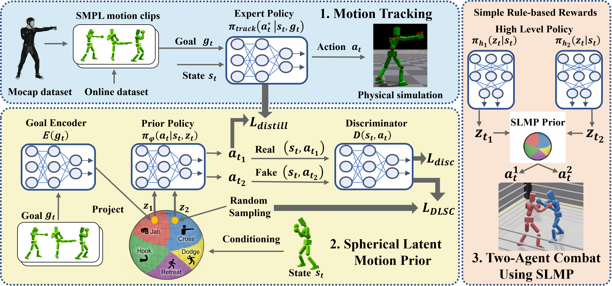

Random Sampling Comparison with Prior Methods
ASE
PULSE
SLMP
Learning motion priors for physics-based humanoid control is an active research topic. Existing approaches mainly include variational autoencoders (VAE) and adversarial motion priors (AMP). VAE introduces information loss, and random latent sampling may sometimes produce invalid behaviors. AMP suffers from mode collapse and struggles to capture diverse motion skills. We present the Spherical Latent Motion Prior (SLMP), a two-stage method for learning motion priors. In the first stage, we train a high-quality motion tracking controller. In the second stage, we distill the tracking controller into a spherical latent space. A combination of distillation, a discriminator, and a discriminator-guided local semantic consistency constraint shapes a structured latent action space, allowing stable random sampling without information loss. To evaluate SLMP, we collect a two-hour human combat motion capture dataset and show that SLMP preserves fine motion detail without information loss, and random sampling yields semantically valid and stable behaviors. When applied to a two-agent physics-based combat task, SLMP produces human-like and physically plausible combat behaviors only using simple rule-based rewards. Furthermore, SLMP generalizes across different humanoid robot morphologies, demonstrating its transferability beyond a single simulated avatar.

ASE
PULSE
SLMP
VAE
VA-VAE
Sphere
SLMP
Distill only
Distill + GAN
Distill + NSC
SLMP (Full)
NCP Reward
NCP + AMP Reward
Simple Rule-Based Reward
Random Sampling
Combat
Random Sampling
Combat
@article{tan2026slmp,
title = {Spherical Latent Motion Prior for Physics-Based Simulated Humanoid Control},
author = {Tan, Jing and Xu, Weisheng and Jiang, Xiangrui and Zhang, Jiaxi and Yang, Kun and Wu, Kai and Xiong, Jiaqi and Chen, Shiting and Li, Yangfan and Feng, Yixiao and Fang, Yuetong and Zou, Yujia and Song, Yiqun and Xu, Renjing},
journal = {arXiv preprint arXiv:xxxx.xxxxx},
year = {2026}
}